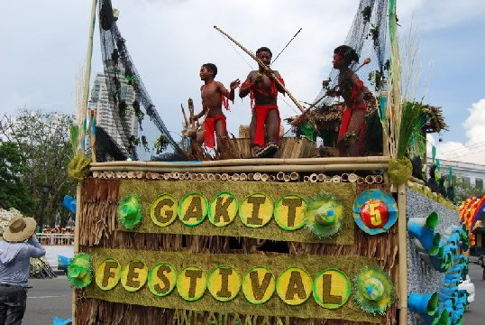

Discover The Province of Isabela
Experience the charm and uniqueness of Isabela through its rich history, vibrant culture, stunning attractions, cuisines, and festivals.
History and Culture

Isabela's early origins date back to the Stone Age over 25,000 years ago when a pygmy race called the Agtas were the first indigenous people to inhabit the Philippines. They were the ancestors of the Dumagats, who still roam the mountainous forestlands of Eastern Isabela and the shorelines of Coastal Isabela. For many centuries, the ancient Agtas subsisted as hunters, gatherers, and fisherfolk.
Five thousand years ago, a wave of Indonesian migrants came to Isabela, followed by three waves of Malays between 200 BC and 1500 AD. Their descendants are the present-day Ibanag, Gaddang. Yogad, and other indigenous peoples who occupy the valleys and foothills of Western Isabela where they built a civilization based on corn agriculture governed by the basic political unit known as the barangay,

In the 16th and 17th centuries, the Spaniards arrived in northern Luzon and introduced the Christian religion, the encomienda system of government, and the tobacco monopoly. Their 300-year rule was marked by oppression, which triggered several revolts in the 18th century led by local chieftains Dabo and Marayag. Prior to 1839, the entire Cagayan Valley was one large province which the Spanish insular government designated as La Provincia del Valle de Cagayan. To facilitate the conversion of the natives to Catholic Christianity by Spanish missionaries, two provinces were created in the vast territory, namely Cagayan and Nueva Vizcaya. The latter was established upon the advice of Cagayan's alcalde mayor to Governor-General Luiz Lardizabal who issued an order in 1839 which was approved by a Spanish royal decree on April 10, 1841.
Another royal decree was issued on May 1, 1856, creating Isabela de Luzon - as the province was initially called, distinguishing it from similarly named places in other parts of Las Islas Filipinas. The new province's name was derived from then reigning Queen Isabella II of Spain. It consisted of nine towns of which were formerly part of Cagayan and seven others detached from Nueva Vizcaya.
A new wave of migration started in the late 19th, with large numbers of Ilocanos from northwestern Luzon settling in Isabela. They were followed by other ethnolinguistic groups, transforming the province into the "Melting Pot of the North."

During the Philippine-American War that followed the Philippine Revolution against Spain in the 1890's, the town of Palanan in Coastal Isabela figured prominently. There, on March 23, 1901, the first Philippine President, General Emilio Aguinaldo, was captured by US forces, signaling the end of America's first war as a colonial power. Under US rule, changes were instituted in the political system but the economy of Isabela remained agricultural.
The Japanese occupation of Isabela began in 1942 and lasted up to 1945, when the entire country was liberated by Filipino and American forces at the end of the World War II. Thereafter the Philippines became an independent republic in 1946.
From the late 20th century to the turn of the millennium, Isabela continued to grow as a premier province of the Philippines. In 1994, Santiago became an independent component city followed by Cauayan in 2001 and Ilagan in 2012
Isabela today is home to, 1,593,566 people who are distinguished for their resilience and diligence. Majority of them are classified as Ilocanos, who constitute 69% of total households. Two other prominent ethnolinguistic groups are Ibanag at 14% and Tagalog at 10%. The balance of 7% belongs to the Gaddang, Paranan, Yogad, and other indigenous tribes. their ethnic differences notwithstanding, Isabeleños demonstrate a close kinship that allows for great ease when challenging times call for unity, cooperation, and service to family and their community.
Isabela has one of the highest literacy rates in the world at 97%. Most Isabeleños, especially those in the urban centers, speak and understand both English and Filipino. Isabela's attractive suburban lifestyle has steadily been attracting retirees of foreign descent. as well as Bicolanos, Visayans, and Filipinos from other regions, contributing to the fluency of Isabeleños in other languages and local dialects, and to interesting inter-regional cultural blends that are most evident in the lifestyle and culinary practices of the locals.
Finest Attractions in Isablea
Dinapigue Beach
Dinapigue Beach- You can feel the beauty of nature untouched by man. A yet to be discovered beach with it’s white sands and crystal clear waters suitable for snorkeling and scuba diving. The Municipality of Dinapigue is accessible by air, sea and land transport. The existence of roads from this municipality to the rest of the mainland towns is an indication that Dinapigue will soon be compared to other municipalities who are now enjoying the modern day of living.
Palanan Beach
Palanan is attracting tourists from all over for its isolation, rustic beauty and natural wonders.
Covered by the Sierra Madre mountains, and surrounded by the waters of the Pacific Ocean, Palanan is also rich in natural resources such as corals, marine life, and forests. Its mystique is also enhanced by the presence of the indigenous group called Agta or Dumagat who freely roam around the area.
If you are in Palanan, you can enjoy the beach without worrying about the noise of commercial establishments and hotels. Palanan’s coastline is also not only ideal for swimming but also for surfing.
Dicotcotan Beach
The virgin white sand beaches of Dicotcotan is probably Isabela’s best-kept secret. Its coastline is very much exposed to swell and strong waves from the Pacific Ocean, perfect not only for swimming, but also for surfing.
Maconacon Falls
Dibulo Falls
When visiting the province of Aurora and you have the guts to stretch your exploration to reach the farthest and northernmost part which is the town of Dilasag, there is a natural wonder you need not miss to see. It is the wonderful Dibulo Falls.
Pinzal Falls
After some trekking, you can dip into the basin of the Pinzal waterfalls. The falls is a very good place to relax after the long walk and to unwind for a while and forget the problems of life.
Hanging Bridge
Ilagan Sanctuary
Ilagan Sanctuary is the most visited tourist spot in Ilagan City today. It is a protected area located in the foothills of the Sierra Madre mountain range in Brgy. Santa Victoria, Ilagan City, Isabela. This Nature Discovery that Isabelinos take pride of is 15 kilometers away from the City proper of Ilagan. Ilagan sanctuary is a nature discovery where everyone can enjoy nature’s finest beauty and experience ventures that this place can offer.
When it comes to tourism, Isabela is blessed with many attractions that may boost the tourism and may attract many tourists. One of the many attractions that Isabela has is the Ilagan Sanctuary, a very beautiful place we can all relax together with our friends, relatives and our families.
There are many different activities that we can enjoy while we are on the sanctuary. Attractions inside the park include Bird viewing, Mini zoo, Natural spring pool, Pinzal falls, Butterfly park and the caves.
Famous Cuisines in Isabela
Isabela Province is where the biggest supply of rice in Northern Luzon comes from. It’s also the biggest supplier of corn in the country, earning its titles “Rice Granary of Northern Luzon” and “Corn Capital of the Philippines.” It’s in the Cagayan Valley region and in the middle of Cagayan Province, Kalinga, Mountain Province, Ifugao, Nueva Vizcaya, Quirino, Aurora the Philippine Sea.
It’s a province rich in fisheries, crops, forestland, and mineral deposits. Apart from that, Isabela also has its share of delectable delicacies, and we listed some of our favorites here:
Pancit Cabagan
Pancit Cabagan is a flavorful and hearty noodle dish that has become a beloved staple in Filipino cuisine. Originating in the town of Cabagan in the province of Isabela, it is named after the place where it was first created. The dish is characterized by its unique combination of ingredients, such as thick rice noodles, pork, shrimp, vegetables, and a savory sauce.
The ingredients are cooked together in a wok, giving the noodles a unique texture and flavor. Pancit Cabagan is considered a comfort food in the Philippines and is often served during special occasions and family gatherings. It is a simple yet delicious dish that will surely please the whole family.
Binallay
A trip to Isabela wouldn’t be complete without trying Binallay, a delicious traditional delicacy. Made of sticky rice flour and coconut milk, this sweet sticky rice cake is wrapped in banana leaves and cooked to perfection in boiling water. Enjoyed during special occasions and festivals, Binallay is served with latik sauce for an extra burst of flavor. Don’t miss out on this unique and flavorful treat when in Isabela!
Moriecos
This rice cake (kakanin in Tagalog) is stuffed with latik or caramelized young coconut, steamed and wrapped in fresh banana leaf.
Dinengdeng
This Ilokano dish has a soup base made of bagoong isda (fermented fish paste) mixed with local vegetables and some grilled or fried fish. It is also similar to Bulanglang and Laswa; the only difference is the addition of fish and fermented fish paste.
Inatata
Whole glutinous rice that’s a bit sweet and wrapped in small cylinders made of banana leaves are cooked by steaming. They’re tied in batches, ten per batch, and it resembles a magazine of bullets when tied.
Colorful Festivals in Isabela
Bambanti Festival
The Bambanti (Scarecrow) Festival (May 10) celebrates the bountiful harvest of rice and corn and other agricultural products with street dances and a float parade.
Nuang Festival
San Agustin is the top producer of Murrah buffaloes in the entire country which is why every September 27, a day before their foundation day or town fiesta, they hold the Nuang Festival, nuang is Ilocano for buffalo, to celebrate this feat.
Pagay Festival
The Pagay Festival is celebrated every 28th of September to observe the founding anniversary of the town of Alicia in Isabela, and highlight the town’s production of Pagay which means Palay (rice).
Binnadangan Festival
Used to be called as Pagay Festival.
Gakit Festival
The Gakit Festival is an annual festival held at the Cagayan River. It was revived to remind Angadanians of their cultural tradition of resourcefulness and self-reliance.
Participants of the festival offer fruits, vegetables, poultry, and livestock as thanksgiving for their abundant bounty. The practice also reminds Angadanians of their tradition of planting crops and raising poultry in their own backyards for their own consumption. This hopefully will reduce Angadanian’s reliance on others and will inculcate resourcefulness in each Angadanian.
The Gakit Festival also aims to show Angadanians that progress can only be achieved if they are united as one. A key detail of the Gakit Festival is the hand-made bamboo rafts which are used by the participants of the Festival. Each bamboo pole, if alone, has no value. It cannot float reliably on a river nor can it be used to transport anything. But if many bamboo poles are tied together as one, it can be made into a raft which can float and sail on calm or rough waters while transporting people and products.
Pattaradday Festival
The City of Santiago in Isabela celebrates unity in diversity and its 17th Cityhood Anniversary as it holds the 12th Pattaradday Festival. Culled from the Ibanag word for unity, Pattaradday is celebrated on May 1 with the opening of the trade fair, Santa Cruzan and Oktoberfest sa Mayo.
Pattaradday Festival is an inclusive event which unifies the 17 ethno-linguistic groups in the city. The festival was initiated by civic leaders, the Art Association of Santiago, concerned citizens and the city government to showcase local identity and Santiago’s origins. Santiago is also home to Muslim, Chinese and Indian minorities, making it a melting pot in northern Luzon and a city living in unity despite diversity.
Gawagawayan Festival
Gawagaway-yan Festival is a tribute to ancestry celebrated every 14th of April.
The “Gawagaway-yan Festival” is a unique celebration of the people of Cauayan City, Isabela that traces the ancestry of Cauayeneos from the ethnolinguistic group called “Gaddang.”
Baka Festival
The “Gawagaway-yan Festival” is a unique celebration of the people of Cauayan City, Isabela that traces the ancestry of Cauayeneos from the ethnolinguistic group called “Gaddang.”
The festival is a fine time to see cowboys of San Pablo display skills that are reminiscent of the American Wild West.
Balatong Festival
Sabutan Festival
Palanan will be celebrating its Sabutan Festival on the 21 – 23 of March. Said Festival commemorates the capture of the First President of the Republic, Emilio Aguinaldo. Local folks will showcase their products like mats, fans and bags made of grass called Sabutan which is grown in the coastal areas of Palanan. You are all invited to the festival and experience the fun and genuine hospitality of Palaneños.